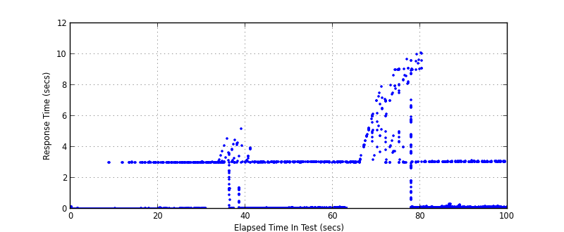
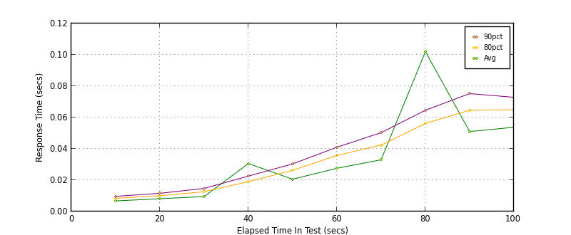
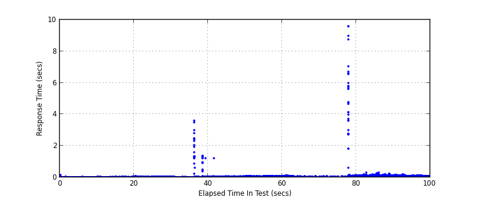
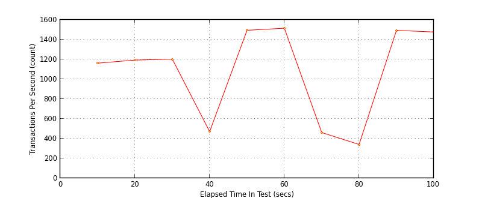

Performance Results Report
Summary
transactions: 108277
errors: 748
run time: 100 secs
rampup: 100 secs
test start: 2016-12-07 17:39:21
test finish: 2016-12-07 17:41:01
time-series interval: 10 secs
workload configuration:
| group name | threads | script name |
|---|
| user_group-1 | 20 | v_post.py |
| user_group-2 | 20 | v_post.py |
| user_group-3 | 20 | v_post.py |
| user_group-4 | 20 | v_post.py |
| user_group-5 | 20 | v_post.py |
| user_group-6 | 20 | v_post.py |
All Transactions
Transaction Response Summary (secs)
| count | min | avg | 80pct | 90pct | 95pct | max | stdev |
|---|
| 108277 | 0.004 | 0.056 | 0.048 | 0.061 | 0.073 | 10.076 | 0.349 |
Interval Details (secs)
| interval | count | rate | min | avg | 80pct | 90pct | 95pct | max | stdev |
|---|
| 1 | 11624 | 1162.40 | 0.004 | 0.008 | 0.009 | 0.010 | 0.011 | 3.020 | 0.040 |
| 2 | 11937 | 1193.70 | 0.004 | 0.016 | 0.010 | 0.012 | 0.014 | 3.029 | 0.151 |
| 3 | 12034 | 1203.40 | 0.004 | 0.026 | 0.013 | 0.015 | 0.018 | 3.022 | 0.219 |
| 4 | 4718 | 471.80 | 0.005 | 0.094 | 0.020 | 0.025 | 0.030 | 5.173 | 0.477 |
| 5 | 14943 | 1494.30 | 0.005 | 0.038 | 0.028 | 0.032 | 0.036 | 3.950 | 0.225 |
| 6 | 15154 | 1515.40 | 0.005 | 0.044 | 0.037 | 0.043 | 0.048 | 3.066 | 0.217 |
| 7 | 4615 | 461.50 | 0.005 | 0.123 | 0.046 | 0.054 | 0.064 | 6.156 | 0.592 |
| 8 | 3422 | 342.20 | 0.010 | 0.329 | 0.060 | 0.072 | 2.625 | 10.016 | 1.316 |
| 9 | 14933 | 1493.30 | 0.006 | 0.070 | 0.065 | 0.077 | 0.093 | 10.076 | 0.276 |
| 10 | 14777 | 1477.70 | 0.007 | 0.074 | 0.072 | 0.082 | 0.090 | 3.139 | 0.218 |
Graphs
Response Time: 10 sec time-series

Response Time: raw data (all points)

Throughput: 5 sec time-series
Custom Timer: POST
Timer Summary (secs)
| count | min | avg | 80pct | 90pct | 95pct | max | stdev |
|---|
| 108140 | 0.004 | 0.030 | 0.046 | 0.057 | 0.067 | 9.597 | 0.111 |
Interval Details (secs)
| interval | count | rate | min | avg | 80pct | 90pct | 95pct | max | stdev |
|---|
| 1 | 11624 | 1162.40 | 0.004 | 0.007 | 0.008 | 0.010 | 0.011 | 0.133 | 0.003 |
| 2 | 11937 | 1193.70 | 0.004 | 0.008 | 0.010 | 0.012 | 0.013 | 0.042 | 0.003 |
| 3 | 12034 | 1203.40 | 0.004 | 0.010 | 0.013 | 0.015 | 0.017 | 0.076 | 0.004 |
| 4 | 4714 | 471.40 | 0.005 | 0.031 | 0.019 | 0.023 | 0.026 | 3.595 | 0.174 |
| 5 | 14942 | 1494.20 | 0.005 | 0.021 | 0.026 | 0.030 | 0.034 | 1.225 | 0.012 |
| 6 | 15154 | 1515.40 | 0.005 | 0.028 | 0.036 | 0.041 | 0.046 | 0.092 | 0.010 |
| 7 | 4615 | 461.50 | 0.006 | 0.033 | 0.042 | 0.050 | 0.057 | 0.108 | 0.013 |
| 8 | 3410 | 341.00 | 0.006 | 0.102 | 0.056 | 0.065 | 0.073 | 9.597 | 0.572 |
| 9 | 14933 | 1493.30 | 0.006 | 0.051 | 0.065 | 0.075 | 0.088 | 0.311 | 0.022 |
| 10 | 14777 | 1477.70 | 0.007 | 0.054 | 0.065 | 0.073 | 0.080 | 0.172 | 0.015 |
Graphs
Response Time: 10 sec time-series

Response Time: raw data (all points)

Throughput: 10 sec time-series
